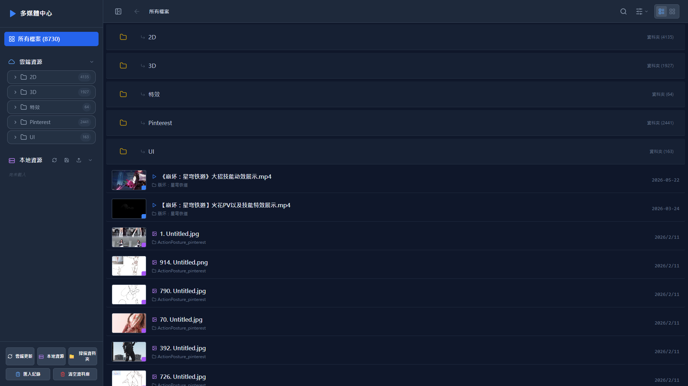
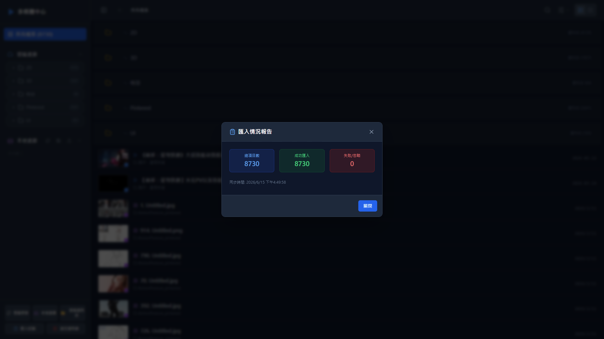

雲端與本地資源管理系統

支援影片、圖片、音訊、PDF 多格式統一管理左側資料夾結構 ｜ 右側檔案瀏覽區

一鍵匯入所有雲端檔案匯入完成顯示詳細報告：總項目 8730 ｜ 成功 8730 ｜ 失敗 0
2D ｜ 3D ｜ 特效 ｜ Pinterest ｜ UI資料夾樹狀結構快速切換分類
列表模式 ｜ 宮格模式縮圖預覽 · 檔案名稱 · 日期資訊
快速搜尋檔案名稱依類型、日期篩選
掃描本地資料夾本機檔案納入統一管理
讓您的創作素材井然有序